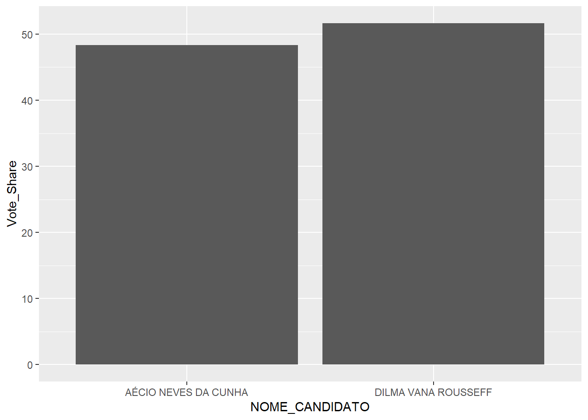

The winner of the election was DILMA VANA ROUSSEFF, with 51.6%.
Table showing first-round results:
| CODIGO_CARGO | SIGLA_PARTIDO | NUM_TURNO | DESCRICAO_CARGO | ANO_ELEICAO | NUMERO_PARTIDO | NUMERO_CANDIDATO | NOME_CANDIDATO | QTDE_VOTOS | Vote_Share |
|---|---|---|---|---|---|---|---|---|---|
| 1 | PCB | 1 | PRESIDENTE | 2014 | 21 | 21 | MAURO LUÍS IASI | 47845 | 0.0459943 |
| 1 | PCO | 1 | PRESIDENTE | 2014 | 29 | 29 | RUI COSTA PIMENTA | 12324 | 0.0118473 |
| 1 | PRTB | 1 | PRESIDENTE | 2014 | 28 | 28 | JOSÉ LEVY FIDELIX DA CRUZ | 446878 | 0.4295921 |
| 1 | PSB | 1 | PRESIDENTE | 2014 | 40 | 40 | MARIA OSMARINA MARINA DA SILVA VAZ DE LIMA | 22176619 | 21.3187930 |
| 1 | PSC | 1 | PRESIDENTE | 2014 | 20 | 20 | EVERALDO DIAS PEREIRA | 780513 | 0.7503215 |
| 1 | PSDB | 1 | PRESIDENTE | 2014 | 45 | 45 | AÉCIO NEVES DA CUNHA | 34897211 | 33.5473328 |
| 1 | PSDC | 1 | PRESIDENTE | 2014 | 27 | 27 | JOSE MARIA EYMAEL | 61250 | 0.0588808 |
| 1 | PSOL | 1 | PRESIDENTE | 2014 | 50 | 50 | LUCIANA KREBS GENRO | 1612186 | 1.5498241 |
| 1 | PSTU | 1 | PRESIDENTE | 2014 | 16 | 16 | JOSÉ MARIA DE ALMEIDA | 91209 | 0.0876809 |
| 1 | PT | 1 | PRESIDENTE | 2014 | 13 | 13 | DILMA VANA ROUSSEFF | 43267668 | 41.5940075 |
| 1 | PV | 1 | PRESIDENTE | 2014 | 43 | 43 | EDUARDO JORGE MARTINS ALVES SOBRINHO | 630099 | 0.6057258 |
Chart showing second-round results: 